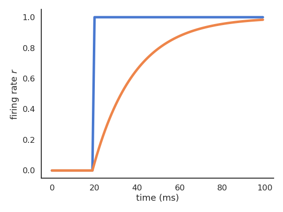
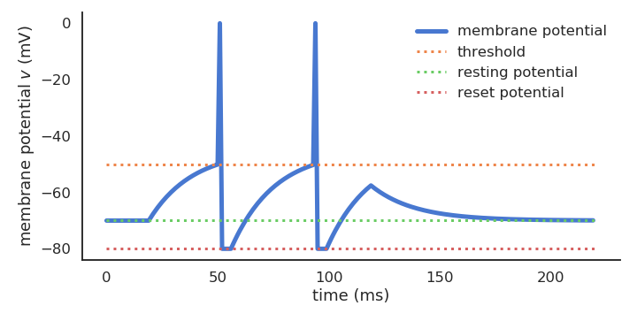

Neuron models
Rate-coded vs. spiking neurons
The two types of neuron models supported by ANNarchy are the rate-coded neuron and the (point) spiking neuron, based on the integrate-and-fire model. More complex models such as the Hodgkin-Huxley model are possible, but less practical.
Rate-coded neuron

\tau \, \frac{d x(t)}{dt} + x(t) = \sum_{i=1}^d w_{i, j} \, r_i(t) + b r(t) = f(v(t))
Leaky integrate-and-fire (LIF) neuron.

C \, \frac{d v(t)}{dt} = - g_L \, (v(t) - V_L) + I(t) \text{if} \; v(t) > V_T \; \text{emit a spike and reset.}
Both neuron models have an internal variable for each neuron (membrane potential) which follows an ordinary differential equation (ODE).
The main difference is how they transmit information: rate-coded neurons transmit continuously their instantaneous firing rate, while spiking neurons implement a binary spike transmission mechanism (membrane potential over a threshold) followed by a reset.
Rate-coded neurons
Let’s use a simple noisy leaky integrator with the tanh transfer function:
\tau \, \frac{d x(t)}{dt} + x(t) = I(t) + \xi(t)
r(t) = \tanh(x(t))
In ANNarchy, neural dynamics are described by the equation-oriented interface:
from ANNarchy import *
Leaky = Neuron(
parameters = """
I = 0.0 # Input (neuron-specific)
tau = 30.0 : population # Time constant
noise = 0.01 : population # Noise level
""",
equations="""
tau * dx/dt + x = I + noise * Uniform(-1, 1) : init=0.0
r = tanh(x)
"""
)Parameters
All parameters used in the equations must be declared in the Neuron definition. Parameters can have one value per neuron in the population (default) or be common to all neurons (flag population or projection). Parameters and variables are double floats by default, but the type can be specified (int, bool).
Variables
Variables are evaluated at each time step in the order of their declaration, except for coupled ODEs. The output variable of a rate-coded neuron must be named r.
Variables can be updated with assignments (=, +=, etc) or by defining first order ODEs. The math C library symbols can be used (tanh, cos, exp, etc).
Initial values at the start of the simulation can be specified with init (default: 0.0). Lower/higher bounds on the values of the variables can be set with the min/max flags:
r = x : min=0.0 # ReLUAdditive noise can be drawn from several distributions, including Uniform, Normal, LogNormal, Exponential, Gamma…
ODEs
equations="""
tau * dx/dt + x = I : explicit
r = tanh(x)
"""First-order ODEs are parsed and manipulated using sympy to obtain the derivative:
# All equivalent:
tau * dx/dt + x = I
tau * dx/dt = I - x
dx/dt = (I - x)/tauThe generated C++ code applies a numerical method (fixed step size dt) for all neural and synaptic variables. The step size dt is 1 ms by default, but this can changed in the setup() function:
setup(dt=0.1)Several numerical methods are available:
explicit: Explicit (forward) Euler (default).
#pragma omp simd
for(int i = 0; i < size; i++){
// tau * dx/dt + x = I
double _x = (I[i] - x[i])/tau;
// tau * dx/dt + x = I
x[i] += dt*_x ;
// r = tanh(x)
r[i] = tanh(x[i]);
}implicit: Implicit (backward) Euler.
#pragma omp simd
for(int i = 0; i < size; i++){
// tau * dx/dt + x = I
double _x = (I[i]*dt + tau*x[i])/(dt + tau);
// tau * dx/dt + x = I
x[i] = _x ;
// r = tanh(x)
r[i] = tanh(x[i]);
}exponential: Exponential Euler (exact for linear ODE).
double __stepsize_x = 1.0 - exp( -dt/tau);
#pragma omp simd
for(int i = 0; i < size; i++){
// tau * dx/dt + x = I
double _x = __stepsize_x*(I[i] - x[i]);
// tau * dx/dt + x = I
x[i] = _x ;
// r = tanh(x)
r[i] = tanh(x[i]);
}midpoint: Midpoint.
#pragma omp simd
for(int i = 0; i < size; i++){
// tau * dx/dt + x = I
double _k_x = dt*((I[i] - x[i])/tau);
double _x = (-(x[i] + 0.5*_k_x ) + I[i])/tau;
// tau * dx/dt + x = I
x[i] += dt*_x ;
// r = tanh(x)
r[i] = tanh(x[i]);
}rk4: Runge-Kutta fourth-order (RK4).
#pragma omp simd
for(int i = 0; i < size; i++){
// tau * dx/dt + x = I
double _k1_x = ((I[i] - x[i])/tau);
double _k2_x = ((-(x[i] + 0.5 * dt * _k1_x ) + I[i])/tau);
double _k3_x = ((-(x[i] + 0.5 * dt * _k2_x ) + I[i])/tau);
double _k4_x = ((-(x[i] + dt * _k3_x ) + I[i])/tau);
// tau * dx/dt + x = I
x[i] += dt/6.0 * ( _k1_x + (_k2_x+_k2_x) + (_k3_x+_k3_x) + _k4_x);
// r = tanh(x)
r[i] = tanh(x[i]);
}event-driven: Event-driven (only for spiking synapses):
for(int i = 0; i < size_pre; i++){
for(int j = 0; i < size_post; i++){
// tau_plus * dx/dt = -x
x[i][j] *= exp(dt*(_last_event[i][j] - (t-1))/(tau_plus));
// tau_minus * dy/dt = -y
y[i][j] *= exp(dt*(_last_event[i][j] - (t-1))/(tau_minus));
}
}See https://annarchy.github.io/manual/NumericalMethods for more explanations.
Populations
Populations are creating by specifying a number of neurons and a neuron type:
pop = Population(1000, Leaky)For visualization purposes or when using convolutional layers, a tuple geometry can be passed instead of the size:
pop = Population((100, 100), Leaky)All parameters and variables become attributes of the population (read and write) as numpy arrays:
pop.tau = np.linspace(20.0, 40.0, 1000)
pop.r = np.tanh(pop.v)Slices of populations are called PopulationView and can be addressed separately:
pop = Population(1000, Leaky)
E = pop[:800]
I = pop[800:]Compiling and running the simulation
Once all populations (and projections) are created, you have to generate to the C++ code and compile it with:
compile()This creates a subfolder annarchy/ where the code is generated, compiled, linked and instantiated. You can then manipulate all parameters/variables from Python thanks to the Cython bindings.
A simulation is simply run for a fixed duration in milliseconds with:
simulate(1000.) # 1 secondYou can also run a simulation until a criteria is filled, check https://annarchy.github.io/manual/Simulation/#early-stopping
Monitoring
By default, a simulation is run in C++ without interaction with Python. You may want to record some variables (neural or synaptic) during the simulation with a Monitor:
m = Monitor(pop, ['x', 'r'])
n = Monitor(proj, ['w'])After the simulation, you can retrieve the recordings with:
recorded_v = m.get('v')
recorded_r = m.get('r')
recorded_w = n.get('w')- Calling
get()flushes the underlying arrays. - Recording projections at each time stepcan quickly fill up the RAM…
Spiking neurons
Spiking neurons are defined with the same interface as rate-coded ones, but they must also define two additional fields:
spike: condition for emitting a spike (typically when the membrane potential exceeds a threshold).reset: what happens after a spike is emitted (at the start of the refractory period).
A refractory period in ms can also be specified.
Example of the Leaky Integrate-and-Fire:
C \, \frac{d v(t)}{dt} = - g_L \, (v(t) - V_L) + I(t)
\text{if} \; v(t) > V_T \; \text{emit a spike and reset.}
LIF = Neuron(
parameters = """
C = 200.
g_L = 10.
E_L = -70.
v_T = 0.
v_r = -58.
I = 0.25
""",
equations = """
C * dv/dt = g_L * (E_L - v) + I : init=E_L
""",
spike = "v >= v_T",
reset = "v = v_r",
refractory = 2.0
)Download the Jupyter notebook: AdEx.ipynb or run it directly on colab.